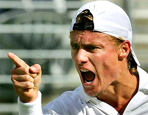
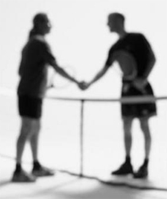
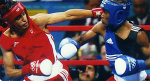
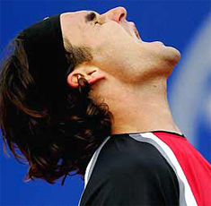

← Bài trước: Overcoming Negative Emotions | 🏠 Mental Game Trang chủ | Bài tiếp: → Reducing Stress
Personal Antagonism Doesn't Pay
By Allen Fox, Ph.D.

Personal antagonism almost never pays off in tennis.
It almost never pays to get personally antagonistic in a tennis match. It will hurt your game. But like many things that involve emotions in tennis, this is easier said than done.
This is because on an emotional level, tennis is very much like a fist fight. It's different from other sports. It feels personal, especially when your opponent is jerking you around the court or trying to dink you to death.
So how does the antagonism start in what is supposed to be a friendly, social match? Maybe you're playing Mike or Sue in a little tournament at your club. It starts out on a friendly basis but after awhile, it escalates. So you gradually step up your efforts to win, as does your opponent.
As the gloves gradually come off and you feel the contest of wills, what started out as just a fun match becomes seriously competitive. If you don't watch yourself, your opponent may begin to irritate you and negatively affect your game.
 Against some opponents you just don't want to shake hands. |
Maybe it's a swagger after making a good shot that grates on your nerves. Or maybe the calls are made a little too quickly and there may even be a pleased tone of voice to the "Out" calls. As you become irritated you may start to think his calls are a little ungenerous.
Yup, the more you think of it, the more certain you become that this person has no sense of morality and is sure to take unfair advantage every chance he gets. The thought of losing and having to smile and congratulate this person afterward makes you shudder.
So now you dare not lose. The match has become personal, and, as it usually does when this happens, it will hurt your game.
Strongly disliking your opponent raises the stakes and you start wanting to win too much. It diverts your thoughts and emotions away from productive, practical ones and on to issues of "winning" or "getting the better of your opponent." You start thinking too much and your emotions get out of control.
Forewarned is Forearmed
So how do you avoid falling into this trap? Realize beforehand that this is likely to happen from time to time because tennis is mentally like a boxing match. Heated competition has a tendency to make you feel aggressive and dislike your opponent.

The fighting instincts in tennis are like boxing.
Early advocates of the sport recognized this and instituted a rigid set of sportsmanship protocols to keep our ugly fighting instincts at bay. Observing courtesies is a good idea because it cools aggression. But the best way to side-step personal antagonism is to make up your mind beforehand that you will not allow yourself to have such feelings. They are natural in our aggressive little game and you must be prepared to counter them.
It becomes easier if you accept that your opponents are imperfect beings, just as you are, and be prepared to overlook their idiosyncrasies as you would expect them to overlook yours. Like you, they have their own ways of walking, making calls, and hitting good shots. They have egos and enjoy beating people just as you do. And they have plenty of insecurities that have nothing to do with you.
Keep this in mind lest you allow your own insecurities to make something personal out of their actions. Realize it's your own insecurities that make you overly sensitive to your opponent's mannerisms. And if you allow your insecurities to run freely they will not only hurt your own game, but make you likely to behave in ways that you will later regret.
The personal one versus one competition makes tennis feel like a fight.
Giving your opponents the benefit of the doubt actually makes it easier to keep yourself on track towards your real goals. (None of which are well served by getting into fights with your opponents.)
Like A Fight
Andre Agassi, trained by his father who was a boxer, describes the aggressive, fighting aspects of matches well in his new book, Open. (For two amazing reviews by two of John Yandell's high school students, Click Here and Click Here.)
Like a fight, the players use all their physical, mental, strategic, and character skills to beat each other. They just don't hit each other, but nonetheless It is a fight for dominance.
All social species are genetically programmed to compete for dominance and position on the social hierarchy - for who is ahead of whom. Human beings are just as programmed to do so too. In a hard-fought match, therefore, winning and losing become emotionally important. Tennis matches "feel" more important than they are.

Even great players are sometimes subject to counterproductive emotions.
The problem is that we were not genetically programmed to play 2 hour tennis matches. So the emotions that pop up tend to be counter-productive. Our nervous systems simply weren't programmed to control the fine motor movements necessary to hit tennis balls over the net and near the lines under stress for several hours.
Under these conditions we are likely to experience emotions like anger or discouragement and be tempted to escape a stressful match by losing concentration or making excuses. Thus during match play the successful competitor needs to become adept at controlling these counter-productive emotions.
This takes a constant effort of will because if one simply lets nature take its course, these destructive emotions are almost certain to come out. Inevitably this sometimes happens, even to great players, proving they are human, and also, how difficult these emotions can be to control.
Escape
Most counterproductive actions on court are subconscious methods for escaping stress. The basic cause of the stress is the uncontrollability of the outcome.
In a hard-fought match winning is very pleasurable and losing is very painful. And no matter how well one prepares, how hard one tries, or how well one controls one's self on court, he or she may still lose. The fact that a player does everything possible to control the outcome of the match, and may even have some belief that he or she can control the outcome, yet at some level realizes that he or she can not, puts the player in an inherently stressful situation.
Losing motivation is a normal and common way to escape stress.
It is normal and natural for people to try to escape this unpleasant stress. And their normal responses are to get angry, to lose motivation when behind and/or to make excuses, all of which are counterproductive.
This is what normal people do, and, of course, normal people loose a lot of tennis matches. In order to be a successful tennis competitor, one must behave abnormally and, with one's conscious mind and logic system, overpower these normal, counter-productive emotional reactions.
The answer is: acceptance of what you can't change. Accept the fact that you will make mistakes. You make them not because you didn't move your feet or you didn't watch the ball. Yes, of course you did those things too, but you make mistakes because you can't help it and you never will be able to help it.
You should always try to do better, but never forget that you are human and humans simply make mistakes. Accept too the fact that your opponent will make some great shots. Do not fight or deny reality. Make it easy on yourself by simply accepting it with good grace and moving on to the next point.
To allow your proper habits to come out, you must avoid strong emotion.
In a tennis match a player's strokes and shot-making abilities are a result of habits developed by hours of repetition in practice. Shots in match play occur too quickly for control by conscious thought. They occur as habitual responses to the various situations on court and are honed by years of experience.
As we all note, to our sorrow, our responses do not always come out right. So we make mistakes and uncontrollable errors in matches. Our job, as competitors, is to minimize these errors. In practice, therefore, the objective is to develop the proper habits through repetition of the exact stroke sequences we hope to use in matches. In matches we just want to have these habits function properly.
Unfortunately, we soon learn that strong emotion during play disrupts these habits. The margins for error in matches are too small. The nervous system involved in producing the proper strokes and responses is finely tuned. Strong emotions like anger, frustration, disappointment and pessimism disrupt the sequences of exact motor responses and cause errors.
Whether you realize it or not, your nervous system takes a hit when you get angry.
But there is a more subtle issue. Most people are aware that playing while angry causes mistakes. But they think that they can get angry at the end of a point - like after missing an easy shot - and then recover before the next point and they will be okay.
But this is not quite true. When a player gets angry or frustrated after missing an easy shot or losing an important point, the nervous system takes a hit. Though not perceivable, it is thrown slightly out of kilter. Then, even though the player may gather himself together and cool down before the next point, the nervous system becomes ever so slightly more likely to malfunction.
This in turn means that practiced habits tend to be slightly off and a few extra errors result. And these extra errors are, in a close match, just enough to cause a loss. On the average, a 6-4 or 7-5 set is won by a difference of 4 or less points.
A player doesn't have to make many extra errors to change a winning set into a losing one. And this generally happens without the player ever being aware of it.
Decide before you go on court you will not allow yourself to feel angry.
So the bottom line is that if you want to win more matches you should firmly decide before going on court that you will not allow yourself to feel angry, frustrated, or discouraged at all no matter how many easy balls you miss, how great your opponent plays, or under any other circumstances whatsoever.
The General Point
Whether you are dealing with real antagonism from your opponent or not, it's best to keep your head on your side of the net. This means ignoring your opponent's actions under any circumstances. Look at the tennis match as simply a set of physical and mental problems to be overcome.
It is just a healthy project and that makes your opponent just another necessary element of the equation - like the net and lines. As in math class, problem equations are best solved unemotionally and rationally. Getting antagonistic will stiffen your muscles, scatter your focus, and blind you to productive adjustments to your game plan.
Read More From Allen!
Visit him at www.allenfoxtennis.net
 |
Winning the Mental Match Dr. Allen Fox Tennis is mentally the most difficult sport due to it’s personal nature which makes winning and losing feel more important than they are. In this new book, Allen offers his proven solutions to problems such as choking, reducing stress, finishing matches, and developing confidence. Based on a life time of high level play and coaching success, it’s a must for all competitive players. |
 |
Winning may not be everything, but Dr. Allen Fox points out that, if we are honest with ourselves, winning is still eminently preferable to losing. In his new book, The Winner's Mind, Allen lays out an original step-by-step plan for succeeding at any of life's endeavors, based on his first hand and very personal observations of the careers of both world-class tennis players and successful businessman. The bottom line is that even if you are not a born champion--and only a tiny percentage of us are--you can still use the success strategies of champions to tilt the odds in your favor. Writing with brutal honesty and dry humor, Fox lays out the common mental characteristics of winners in sports and in life. He explains the critical role of intellect over emotion. He analyzes the struggle between ambition and fear and the insidious and pervasive fear of failure that undermines so many of us. He then outline how to confront and overcome these fears in your life and career, even when they are initially subconscious. Must reading from one of the great thinkers in tennis, and a Renaissance Man in life. Click Here to Order. To purchase this book you can also send a check for $17.95 to Allen Fox, 1120 Inverness Place, San Luis Obispo, CA. 93401. The price includes shipping. |
 |
Allen Fox PhD is a former world class player, a coach, a psychologist, and one of the most original and insightful analysts in modern tennis. A top 10 American player from the glory days before Open tennis, Fox played many of the legendary greats, among them Roy Emerson, Rod Laver, Stan Smith, and Arthur Ashe. At Pepperdine he developed the men's tennis program into an elite contender for national titles, and gave Brad Gilbert the insights that became the foundation for "Winning Ugly". His book Think to Win is a modern classic. He has also starred in a series of acclaimed videos, including Pro Secrets of Match Play and Allen Fox's Ultimate Tennis Lesson.
|
← Bài trước: Overcoming Negative Emotions | 🏠 Mental Game Trang chủ | Bài tiếp: → Reducing Stress